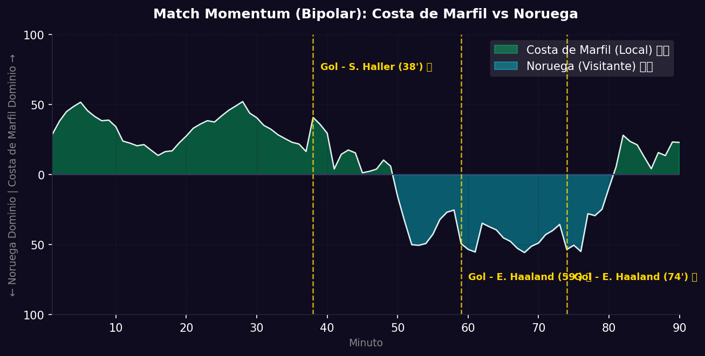
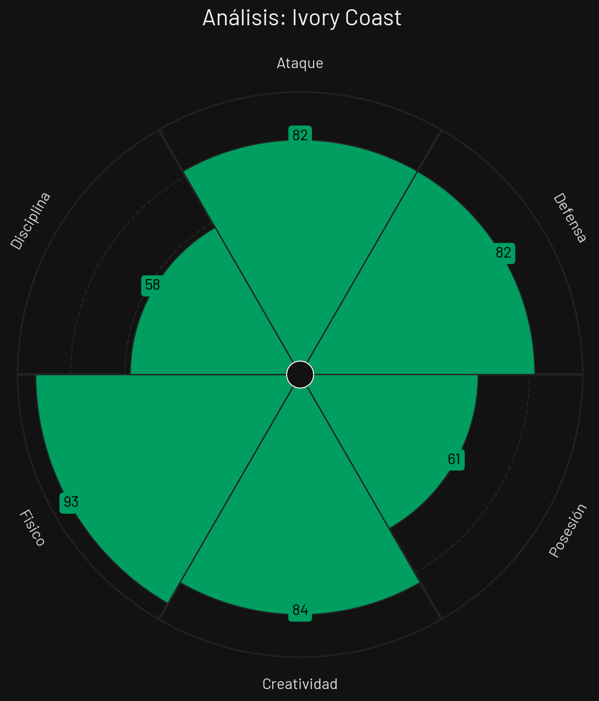
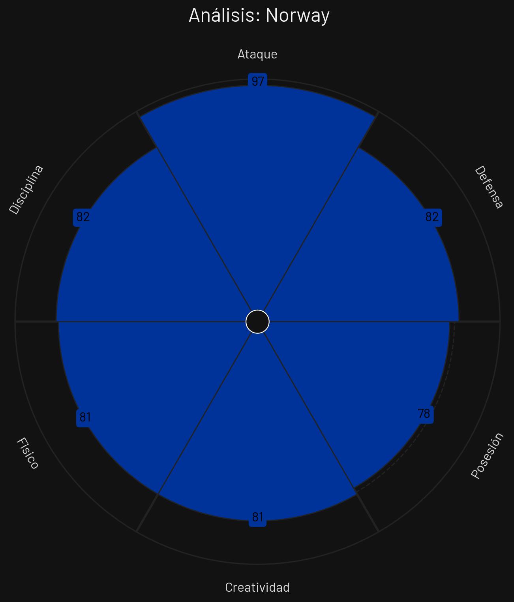

📝 Crónica y Análisis Posterior (Post-Partido)
❌ PREDICCIÓN FALLIDA
⚽ Resumen del Partido (Resultado Real: Costa de Marfil 1 - 2 Noruega)
Noruega dio el golpe en los Dieciseisavos al superar 2-1 a Costa de Marfil en un partido sumamente parejo e intenso. El conjunto marfileño se adueñó de las acciones en el primer tiempo e impuso condiciones físicas en el mediocampo. Al minuto 38', tras un tiro de esquina bien ejecutado, Sébastien Haller se anticipó a su marca para meter un cabezazo esquinado y poner el 1-0.
Tras el descanso, el técnico noruego modificó el planteamiento táctico para liberar a Martin Ødegaard de la presión personal. El ajuste dio frutos de inmediato: en el minuto 59', Ødegaard filtró un balón precioso que Erling Haaland definió con potencia cruzada para establecer el 1-1. Lejos de conformarse, Noruega aprovechó el momento de desconcierto marfileño y en el minuto 74', tras un centro desde el costado izquierdo, nuevamente Erling Haaland apareció en el área para conectar un potente frentazo que decretó el 1-2 final y el boleto a Octavos.
🔮 Impacto en la Fase Final (Dieciseisavos) y Proyecciones
- Ajuste del Algoritmo: El algoritmo favorecía a Costa de Marfil con un 42% frente a un 36% de Noruega. Sin embargo, la genialidad asociativa de Ødegaard y la contundencia clínica de Haaland pesaron más que el orden colectivo de los Elefantes.
- Proyección de la Siguiente Fase (Octavos de Final): Noruega se clasifica a los Octavos de Final, donde sostendrá una durísima eliminatoria europea frente a Francia.
📈 Análisis del Match Momentum y Match Point (Punto Crítico)
El gráfico del Match Momentum muestra un claro dominio de Costa de Marfil durante la primera mitad. No obstante, el segundo tiempo describe el vuelco táctico que favoreció a Noruega, logrando picos de altísima intensidad ofensiva a partir del minuto 55'.
El Match Point (Punto Crítico) del partido fue el minuto 59' con el gol del empate de Erling Haaland. Hasta ese momento, Costa de Marfil defendía con comodidad su ventaja. La aparición goleadora del delantero noruego desató los nervios de la defensa marfileña y le otorgó a los nórdicos la inercia mental y el control futbolístico que desembocaron en el gol del triunfo.
Gráfico: Match Momentum (Intensidad de Ataque)

🇿🇦 Costa de Marfil: Análisis Táctico
Ventajas
- Fortaleza en el mediocampo: El trío de mediocampistas impone un ritmo físico y asfixiante que rompe la circulación rival.
- Solidez en duelos individuales: Defensores muy corpulentos idóneos para contener marcas personales estrictas sobre Haaland.
- Velocidad exterior: Adingra y los extremos son muy punzantes al contragolpe.
Desventajas
- Distracción defensiva en centros frontales: Han mostrado dificultades posicionales ante centros laterales.
- Menor fluidez creativa: Les cuesta generar juego de posesión elaborada ante bloques muy replegados.
🇨🇦 Noruega: Análisis Táctico
Ventajas
- Erling Haaland en punta: El delantero de élite mundial es capaz de resolver cualquier partido con media oportunidad.
- Asociación y visión de Ødegaard: Su lucidez para asistir al espacio es la principal llave de gol noruega.
- Alto volumen de cara al arco: 8 goles en fase de grupos avalan su gran efectividad ofensiva.
Desventajas
- Fragilidad defensiva extrema: Conceder 7 goles en 3 partidos evidencia serios desajustes en el retroceso defensivo.
- Excesiva dependencia de sus figuras: Si anulan a Ødegaard y Haaland, el equipo se queda sin respuestas tácticas claras.
📊 Pizarras y Gráficos Tácticos
Perfil Táctico (Costa de Marfil)

Perfil Táctico (Noruega)

 Noruega
Noruega